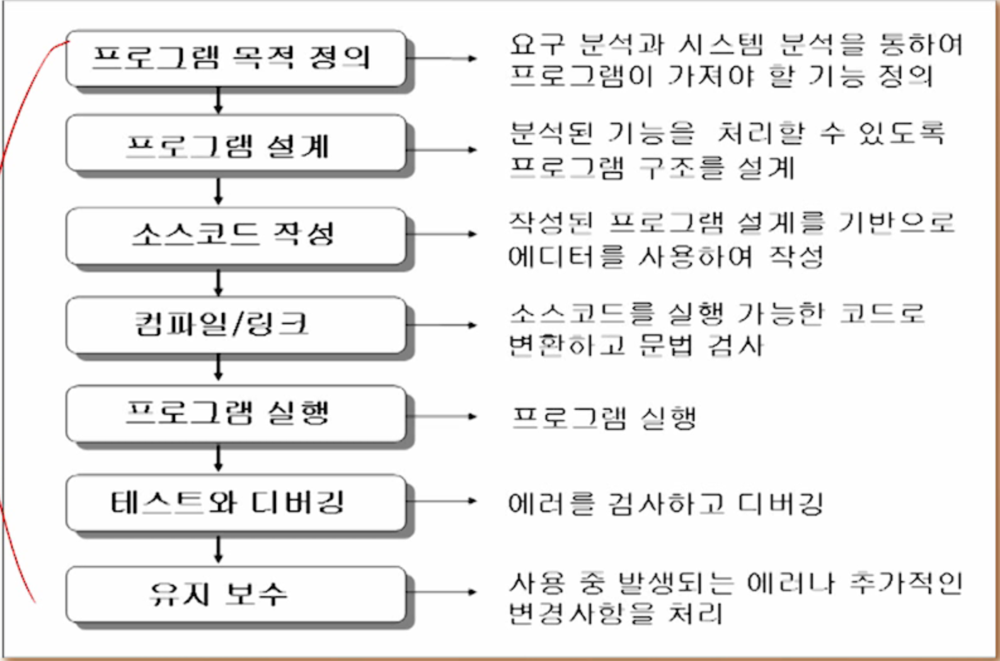

C언어의 개요
프로그래밍언어: 사람과 컴파일러가 이해할 수 있도록 약속된 형태의 언어
사람이 컴파일러에게 지시할 수 있도록 약속된 언어
C언어: 컴파일러가 필요합니다.
컴파일러: 프로그래밍 언어로 작성된 프로그램을 컴퓨터가 이해할 수 있도록 기계에서 번역해주는 번역기
어셈블러: 기호로 표현된 어셈블리 코드로 기예어로 번역하는 번역기
인터프리터: 소스 프로그램을 한번에 기계어로 변환시키는 컴파일러와 달리 프로그램을 한 단계씩 기계어로 해석하여 실행하는
언어처리프로그램
역사
하드웨어를 제어할 수 있는 새로운 언어가 필요하여 어셈블리어를 C언어로 대체함
특징
프로그램 이식성이 높다.: 하드웨어를 제어하는게 목적
저급언어 특성을 가진 고급언어이다.
고급언어이면서 하드웨어를 다룰수 있기 때문에 컴퓨터에 가까워서 저급언어 특성을 가진다고 할 수 있다.
간단한 문법표현으로 함축적인 프로그램 작성이 용이하다.
프로그램 작성 및 준비

결국은 요구 분석과 시스템 분석을 해서 프로그램이 어떤 기능을 제공할 것인지 그걸 먼저 정의해야한다.
프로그램 개발단계
에디터: 소스코드를 작성하여 저장할 수 있도록 도와주는 도구
C컴파일러(번역기)
프로그램 완성 과정
코딩
컴파일
링킹
코딩 단계: 주어진 문제를 설계를 바탕으로 소스코드를 작성하여 소스파일을 생성하는 과정
컴파일단계: 소스파일이 목적파일(컴파일된 파일)로 변환하는 과정, 이때 컴퓨터를 바로 구동시켜주는 파일은 아니다.
링킹단계: 목적 파일을 실행파일로 변환되는 과정
소스파일의 생성(코딩과정)
에디터를 통해서 문법에 맞게 명령어를 통해서 작성하여 소스파일 생성
sample.cc라는 확장자로 가진 파일로 저장
소스파일의 컴파일
소스파일(sample.c) -> 컴파일러 -> 목적파일(기계어-sample.obj): 실행파일 직전에 기계어로 번역됨.
실행파일의 생성(링킹과정)
목적파일(.obj): 목적파일은 실행이 모여져서 실행될 수 있는 링크 되어 연결되어 실행파일이됨
그걸 링크해주는게 링커라는 프로그램이 된다.
현재는 컴파일할 때 실행파일과정까지 같이 한다.
주요용어
컴파일러(compiler) : 프로그래밍 언어로 작성된 프로그램을 기계어로 바꿔주는 번역기
소스코드(source code) : 프로그램 안에 있는 명령어
목적 파일(object file) : .obj의 확장자를 갖는 파일로 기계어들의 집합으로 이루어진 파일
링커(linker) : 여러 목적파일과 라이브러리 파일을 연결해주는 도구
예약어(reserved word) : C 언어에서 미리 정의되어 있는 단어